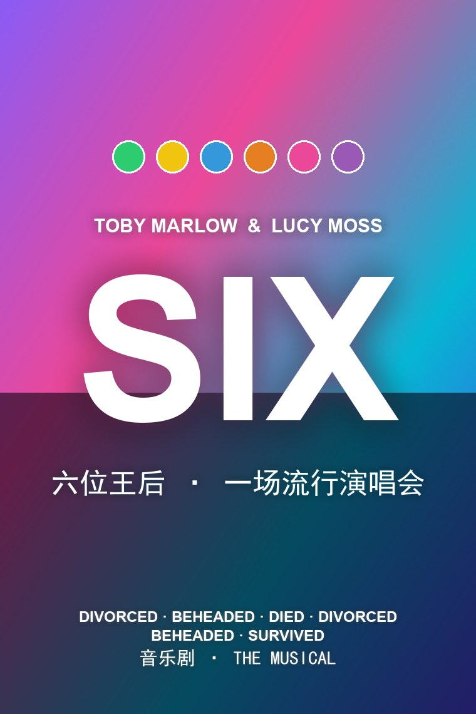
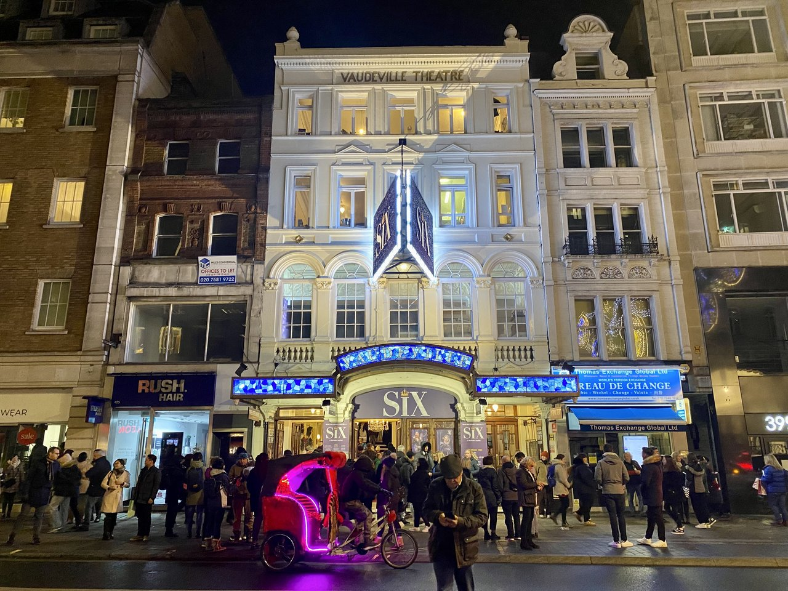
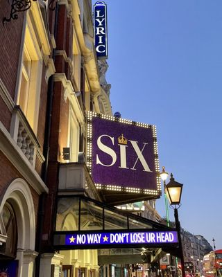

MUSICAL / 音乐剧
SIX
六位王后 · 一场流行演唱会
五位当代流行天后化作亨利八世六位王后的声音，把五百年的历史心碎 remix 成 75 分钟的女性力量派对。没有中场休息，只有麦克风、合成器和六个 reclaim 自己的故事。

MUSICAL / 音乐剧
六位王后 · 一场流行演唱会
五位当代流行天后化作亨利八世六位王后的声音，把五百年的历史心碎 remix 成 75 分钟的女性力量派对。没有中场休息，只有麦克风、合成器和六个 reclaim 自己的故事。
六个女人同台，每个人都背着同一个男人的姓氏——亨利八世。她们决定不再按历史课本的顺序被记住，而是化身为一个女子流行团体，用歌声争夺「谁最惨」的桂冠。
从阿拉贡的凯瑟琳的控诉，到安妮·博林的戏谑；从简·西摩的深情，到克里维斯的安娜的坦荡；再到凯瑟琳·霍华德的破碎与凯瑟琳·帕尔的觉醒，六段独唱慢慢织成一场合唱。她们最终发现，与其比谁更惨，不如一起 reclaim 自己的历史。
From Tudor Queens to Pop Icons, the six wives of Henry VIII take the microphone to remix five hundred years of historical heartbreak into a euphoric celebration of 21st-century girl power.
— 官方宣传导语：都铎王后变身流行偶像，用麦克风把五百年心碎 remix 成女性力量的狂欢。
词曲、剧本与概念主创。剑桥就读期间创作，首演时年仅 21 岁，以极短篇幅重塑音乐剧叙事。
联合导演，把握演唱会节奏与历史叙事的咬合；Moss 因此成为百老汇最年轻的女性导演之一。
编舞，将女团舞蹈、Tudor 礼仪与摇滚现场动作熔于一炉。
服装设计，2022 托尼奖最佳服装设计；每位王后对应一位当代流行偶像的视觉签名。
布景设计，以极简灯光与框架营造流行演唱会现场。
管弦乐编曲，将电声乐队与声乐编排压缩成紧凑的 75 分钟。
| 角色 | 简介 | 西区首演 | 百老汇首演 |
|---|---|---|---|
| Catherine of Aragon 阿拉贡的凯瑟琳 | 首任王后，以 Beyoncé 式自信宣示「No Way」 | Jarneia Richard-Noel | Adrianna Hicks |
| Anne Boleyn 安妮·博林 | 第二任，被处决的「坏女孩」，曲风致敬 Avril Lavigne / Lily Allen | Millie O'Connell | Andrea Macasaet |
| Jane Seymour 简·西摩 | 第三任，温柔悲情的母亲与挚爱，曲风致敬 Adele | Natalie Paris | Abby Mueller |
| Anna of Cleves 克里维斯的安娜 | 第四任，以自嘲与骄傲化解政治婚姻，曲风致敬 Nicki Minaj / Rihanna | Alexia McIntosh | Brittney Mack |
| Katherine Howard 凯瑟琳·霍华德 | 第五任，最年轻的受害者，曲风致敬 Britney Spears / Ariana Grande | Aimie Atkinson | Samantha Pauly |
| Catherine Parr 凯瑟琳·帕尔 | 第六任，作家、独立女性，曲风致敬 Alicia Keys | Maiya Quansah-Breed | Anna Uzele |


SIX 为单幕结构，以下为完整曲目顺序；按角色独唱与终场合唱分为两表。
| 个人竞演 · SOLO ROUNDS | ||
|---|---|---|
| 曲名 | 演唱角色 | 情境 |
| Ex-Wives | 全员 | 开场：六位王后自我介绍，抛出「谁最惨」竞赛 |
| No Way | Catherine of Aragon | 拒绝被休弃的控诉，Beyoncé 式宣言 |
| Don't Lose Ur Head | Anne Boleyn | 以黑色幽默讲述被斩首的命运 |
| Heart of Stone | Jane Seymour | 痛失爱子与王后身份的矛盾之爱 |
| Haus of Holbein | 全员 | 都铎「选妃真人秀」式喜剧穿插 |
| Get Down | Anna of Cleves | 政治联姻失败后的自嘲与洒脱 |
| I Don't Need Your Love | Catherine Parr | 拒绝再用亨利定义自我价值（2021 修订版加入） |
| All You Wanna Do | Katherine Howard | 被物化与虐待的年轻王后的控诉 |
| 合体终章 · FINALE | ||
|---|---|---|
| 曲名 | 演唱角色 | 情境 |
| Six | 全员 | 放下竞赛，合唱「我们是 SIX」 |
| Megasix | 全员 | 返场致谢，整场音乐剧的狂欢收尾 |
爱丁堡边缘艺术节首演，由剑桥大学音乐剧社呈现。
西区 Arts Theatre 六周限定试演，开启西区旅程。
西区正式制作开幕，后迁至 Lyric / Vaudeville Theatre 长期驻演。
北美首演于芝加哥 Shakespeare Theater。
百老汇 Brooks Atkinson Theatre（现 Lena Horne Theatre）开始预演。
百老汇正式开幕，随后打破 Lena Horne Theatre 最长驻演纪录。
横扫托尼、Drama Desk、Outer Critics Circle 等大奖。
原声带《SIX: LIVE ON OPENING NIGHT》获格莱美最佳音乐剧专辑提名。
上海首演，进一步扩大亚洲巡演版图。